UDN
Search public documentation:
DevelopmentKitGemsParallaxOccludedMapping
日本語訳
中国翻译
한국어
Interested in the Unreal Engine?
Visit the Unreal Technology site.
Looking for jobs and company info?
Check out the Epic games site.
Questions about support via UDN?
Contact the UDN Staff
中国翻译
한국어
Interested in the Unreal Engine?
Visit the Unreal Technology site.
Looking for jobs and company info?
Check out the Epic games site.
Questions about support via UDN?
Contact the UDN Staff
UE3 Home > Unreal Development Kit Gems > Parallax Occluded Mapping
UE3 Home > Materials & Textures > Parallax Occluded Mapping
UE3 Home > Materials & Textures > Parallax Occluded Mapping
Parallax Occluded Mapping
Last tested against UDK Mar, 2011
PC compatible
Overview
Parallax occluded mapping is a rendering method which uses concepts from ray tracing to produce virtually displaced textures. The end result is that textures such as stone walls have the appearance of depth which may make walls and floors feel less flat. This gem won't go further into how this technique works, as there is a lot of information out there on the web.
Comparison between different virtual depth methods
Normal mapping
Normal mapping is the standard way to achieve a level of depth derived from lighting. By nature our eyes perceive volume by lighting and shadowing. Areas that are bright on the top and dark on the bottom are normally seen as jutting out of the screen, with the inverse being jutting into the screen. Normal maps however don't actually deform the texture coordinates in any way, thus when analyzed further they appear to be flat. Normal maps are also now very cheap to use, and thus does not affect performance very much at all. 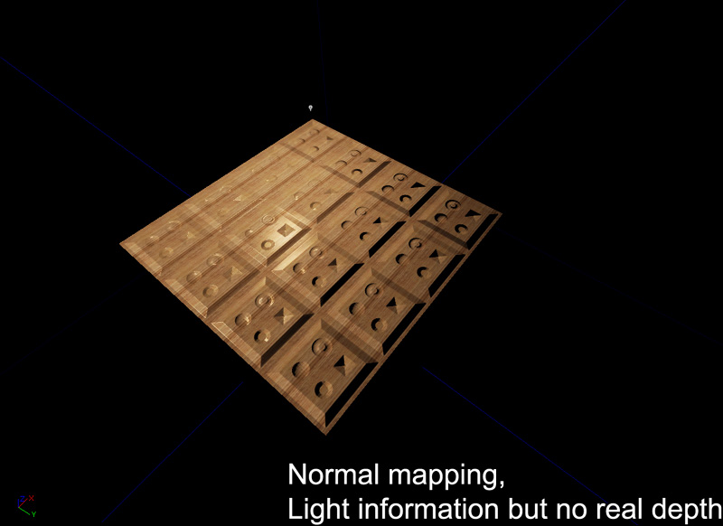Bump Offset mapping
Bump offset mapping (or parallax mapping) adds depth by altering the texture coordinates based on the camera's view direction. By displacing the UV maps of the diffuse, normal and specular, an artificial depth is perceived. Bump offsets only add a few instructions, and thus generally pretty cheap to use. 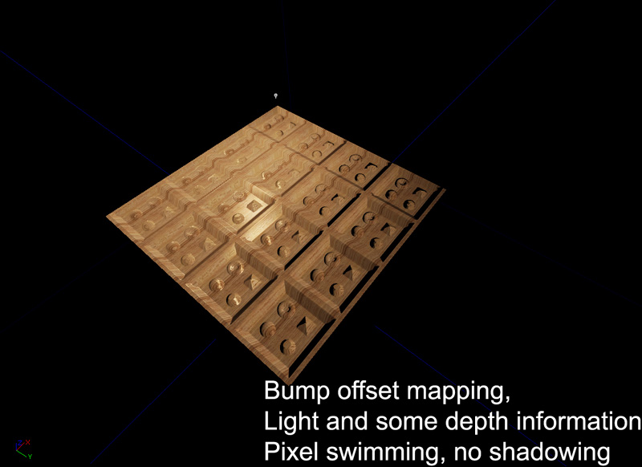 The main problem with bump offset mapping is that it often leads to pixel swimming at high height offsets, and is generally not visually correct. 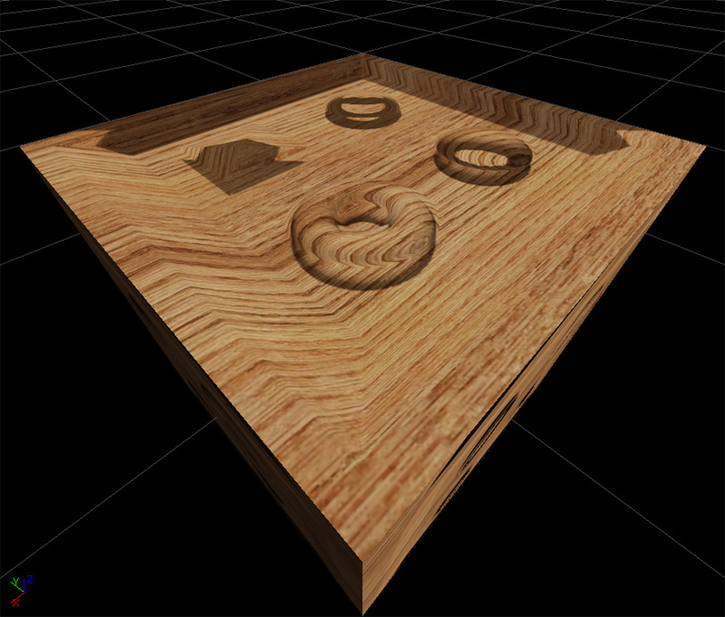Parallax Occlusion mapping
Parallax occlusion mapping adds depth by ray tracing to find the correct texture coordinate based on the camera's view direction. This creates a true perspective correct depth to the material. The occlusion part also means that parts of the height map can occlude other parts which helps to increase the depth. Lastly with self shadowing, more artificial depth is added to the material. Parallax occlusion mapping however is very expensive and generally shouldn't be used everywhere. 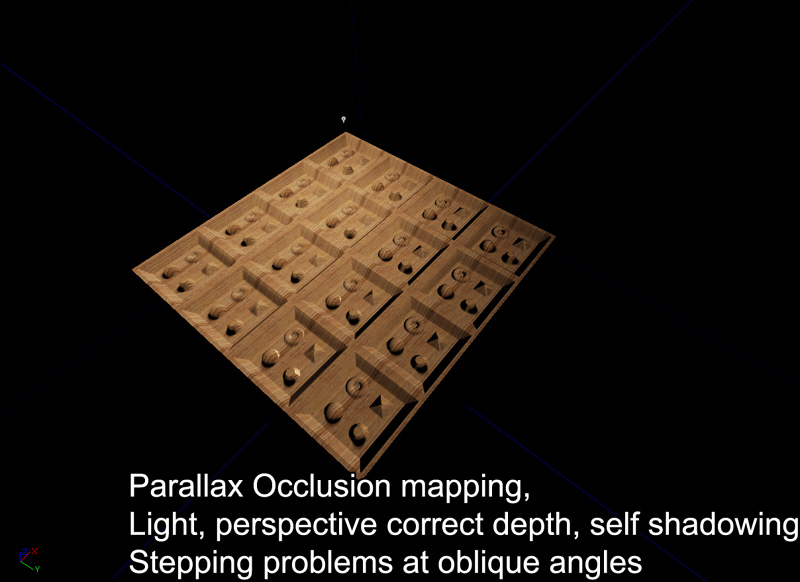 The main problem with parallax occlusion mapping is that at oblique angles the ray tracing is often not precise enough to retrieve the correct height map. As you can in the image below, at oblique angles it is easy to have ray tracing miss the correct depth, or find the incorrect depth. This can be resolved by increasing the number of depth passes or by decreasing the height scale. Large height scale also cause the same problem. 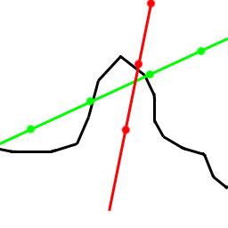 Here is a screenshot of a parallax occluded material seen at an oblique angle. Notice the stepping 'pancake' problems. 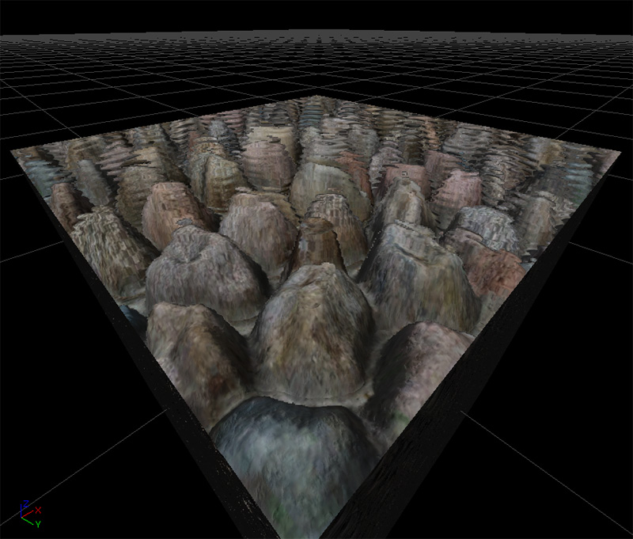Material construction
Given the size of the material, let's look at each part individually.
Calculating the parallax offset
The parallax offset is the vector that is used when stepping through the height map to find the appropriate depth. This is calculated by finding the length squared of the camera vector (already in tangent space). This is then subtracted by the square of camera vector's z value. This is then square rooted then divided by the camera vector's z value. This is then multiplied by the camera vector's x and y value to produce a Vector with two parts, x and y. Lastly, this is multiplied by the height scale and only the x and y components are returned. 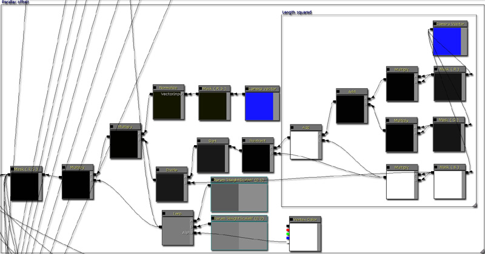Depth pass unit
Each depth pass unit multiplies the parallax offset with a predetermined step size. The material by default only has a maximum of nine depth passes thus the step size is 0.1f (1 / (1 + depth passes)). From there the depth is calculated and then checked against the height retrieved from the height map. If the height is larger than the calculated depth, the parallaxed texture coordinates are passed. If not, then the next depth pass is entered. Each depth pass increases the step size by one, thus projecting deeper and deeper into the height map. It is possible to increase the number of depth passes to increase the quality of the depth search; but the material is limited by performance and instruction count limits. At the end of all the depth passes, a parallaxed texture coordinate is returned. 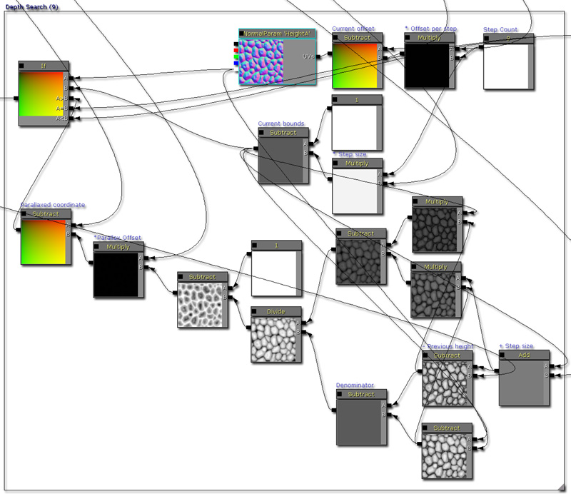Calculating the diffuse
The diffuse is calculated by sampling a diffuse texture parameter. 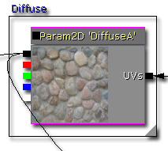Calculating the emissive
The emissive is calculated by sampling an emissive texture parameter and then multiplied by a vector parameter. This allows you to tweak how the emissive is colorized, as well as how bright it is. 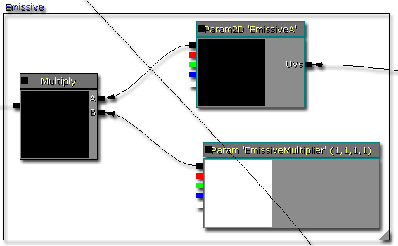Calculating the specular
The specular is calculated in two ways. This allows you to decide which one to use by setting the value on the static switch.- This is calculated by multiplying the diffuse with a vector parameter, this is useful if there is no specular texture available.
- This is calculated by multiplying a specular texture sample with a vector parameter, this is useful if you wish to have a more specific specular.
Calculating the specular power
The specular power is calculated in two ways. This allows you to decide which one to use by setting the value of the static switch.- This is calculated by multiplying a specular power texture sample with a vector parameter.
- This returns a vector parameter.
Calculating the normal
The normal can be calculated with or without the detail normal. This allows you decide if you need or want detail normals to be applied or not. You can also change the scale and depth of the detail normal. As the normal information is required by the reflection vector, the results of this normal is connected into the Normal input for the material. 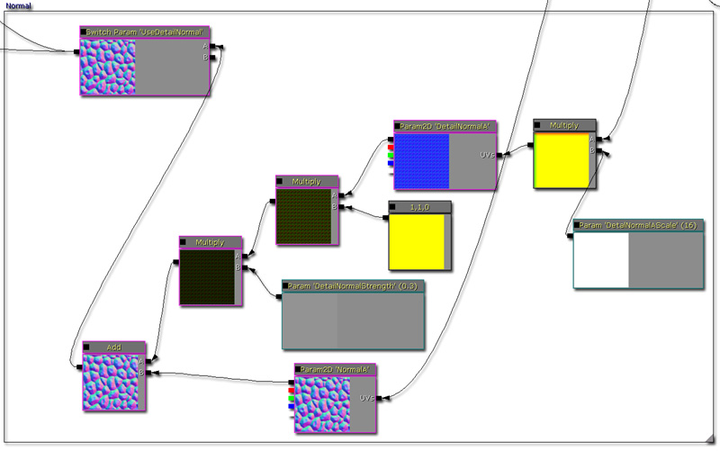Calculating the shadows
Shadows are calculated by inversing the ray trace starting from the depth that was found in the initial depth pass. As the ray is incremented upwards, the height map is sampled and a shadow value is calculated from each trace segment. After all of the shadow segments are calculated, a final value is calculated. 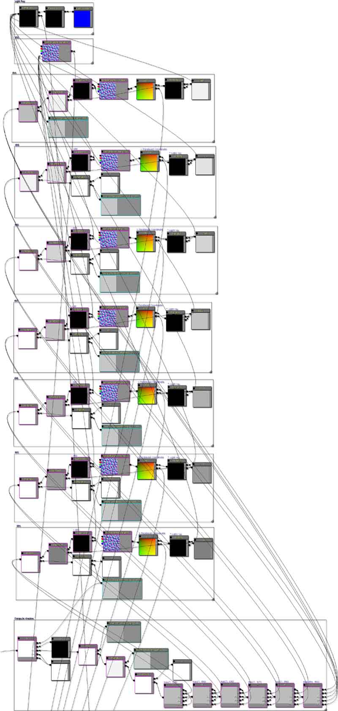Adding the diffuse and specular
As shadows are calculated manually, the materials needs to use its own custom lighting solution verses using Unreal's default calculations. By default, the material will use phong shading so that it is similar to every other material in game. This is done by calculating the diffuse component first, then the specular component and adding the results. 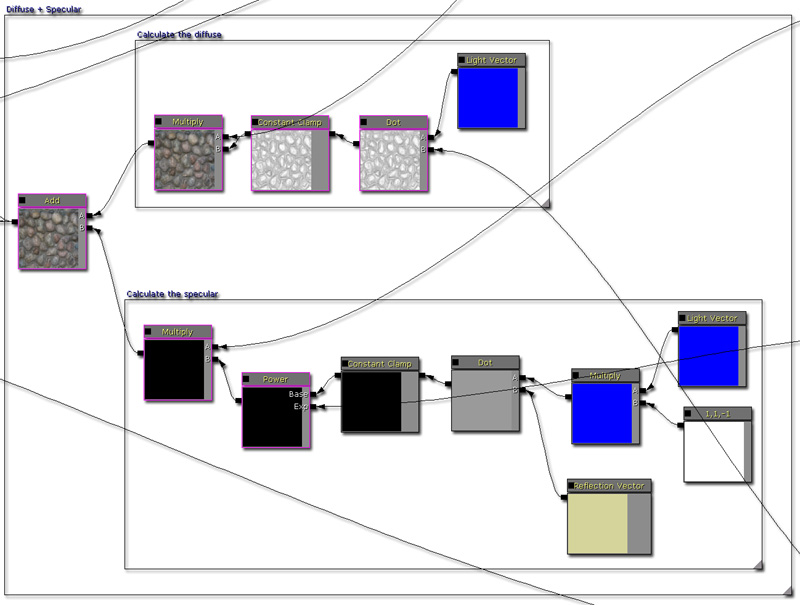Multiplying the shadow coefficient
After the diffuse and specular have been added, the resulting pixel is then multiplied by the shadow coefficient to darken it. It's possible to adjust the constant clamp here to define how dark a shadow can be, or how bright the ambient brightness is. There is also a static switch here that you can use to enable or disable the shadowing pathwaying. 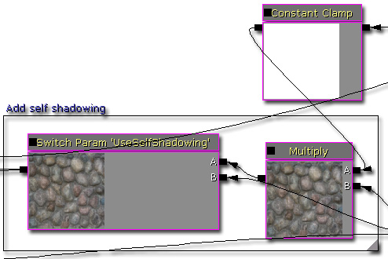Adding the emissive
As the emissive is not affected any of the lighting calculations, it is added at the very end. 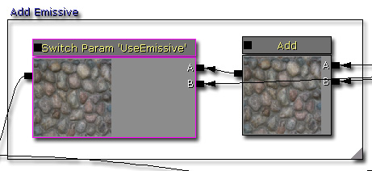Final material tree node
Here is an image of the full material tree node. Click to see a larger view (~2.5mb). 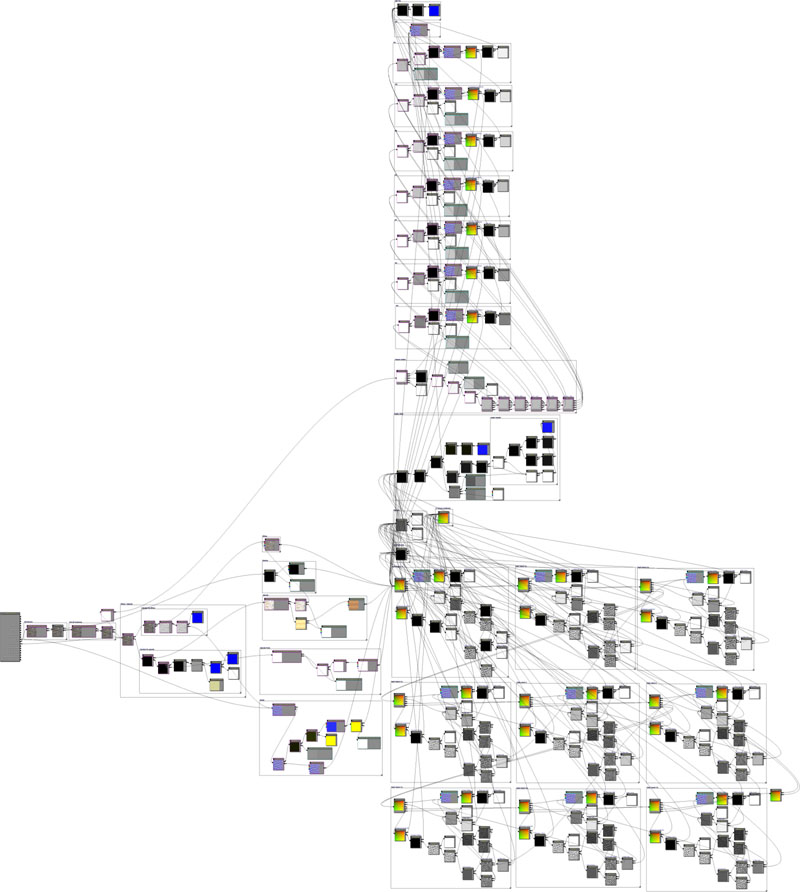
Notes
Because of the size of the material, please be aware that material instancing may take some time to create.
Experimentation into silhouette clipping
It's possible to detect if the parallaxed texture coordinates are above 1.f or below 0.f. If they are, you can set the opacity to 0. This creates some kind of silhouette clipping, but it isn't perfect. 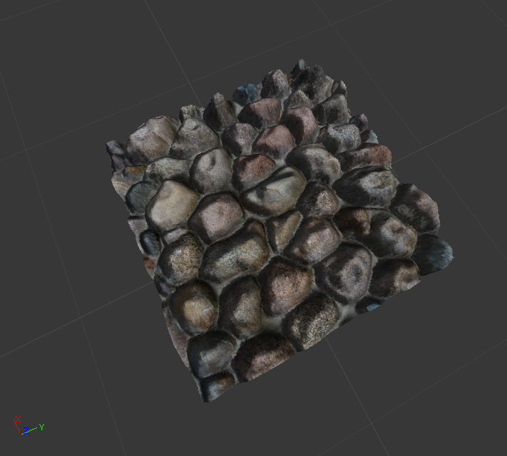
Examples
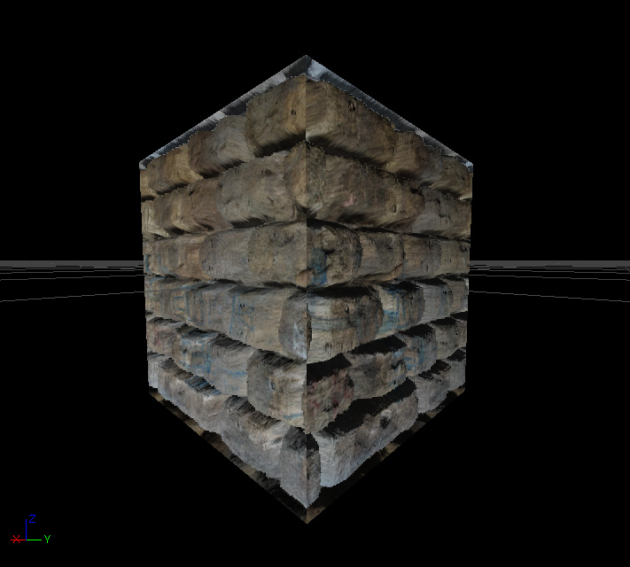 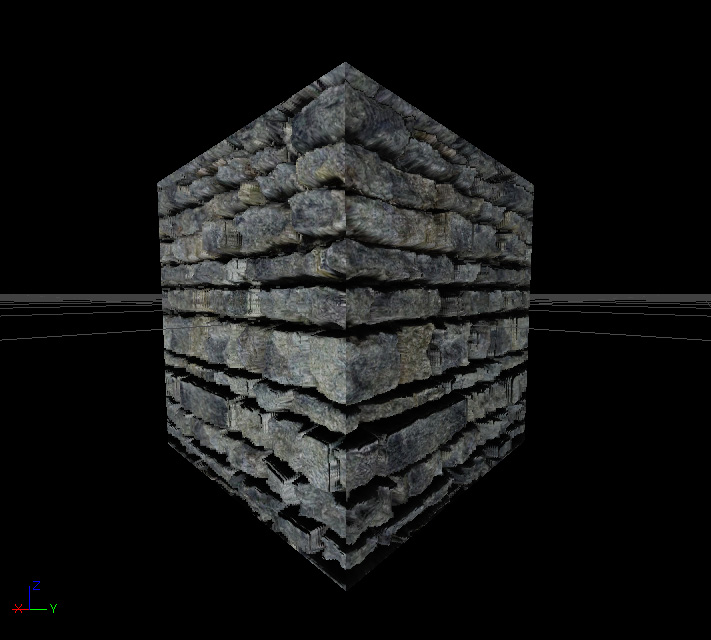 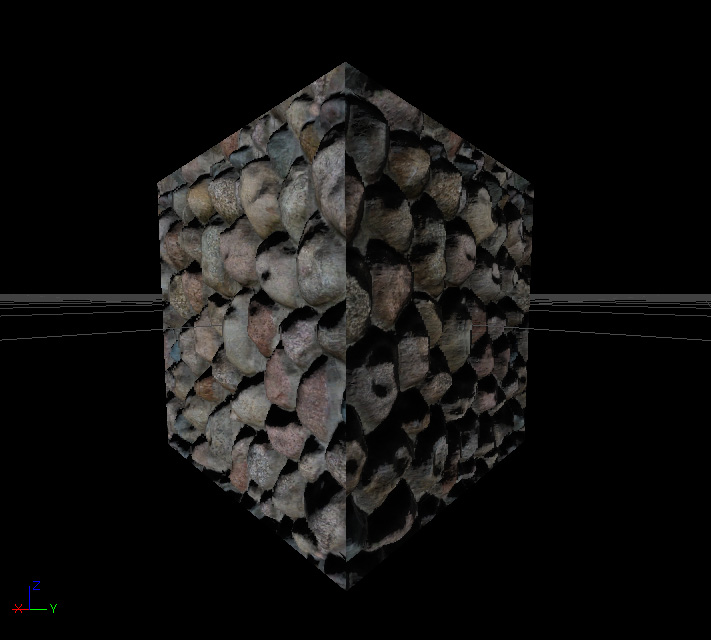
Downloads
- Download the content and materials. (ParallaxOcclusionMapping.zip)